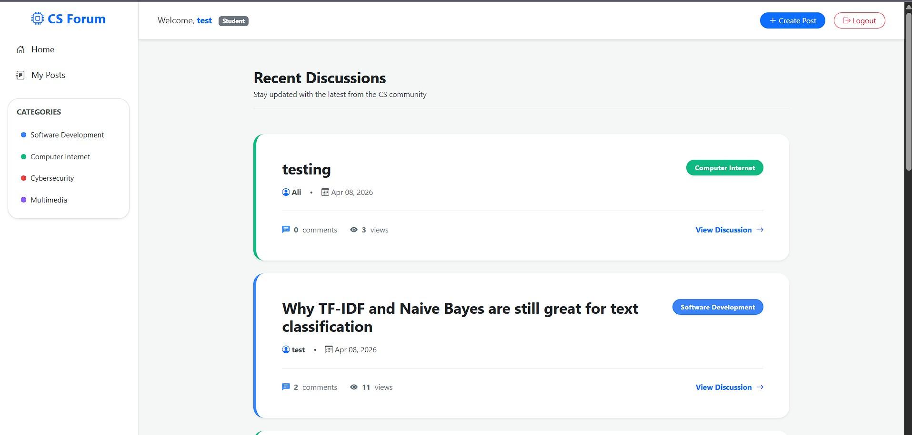

Machine Learning
Training the NLP Spam Detector for My FYP
May 20, 2026
Integrating the Python microservice for my Final Year Project has been incredibly rewarding. Tuning the Naive Bayes and TF-IDF algorithms to accurately flag spam in the Intelligent Computer Science Forum required a lot of testing, but the moderation system is finally working seamlessly with the React frontend.
Read Full Case Study